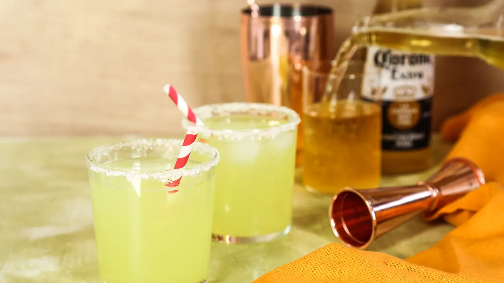
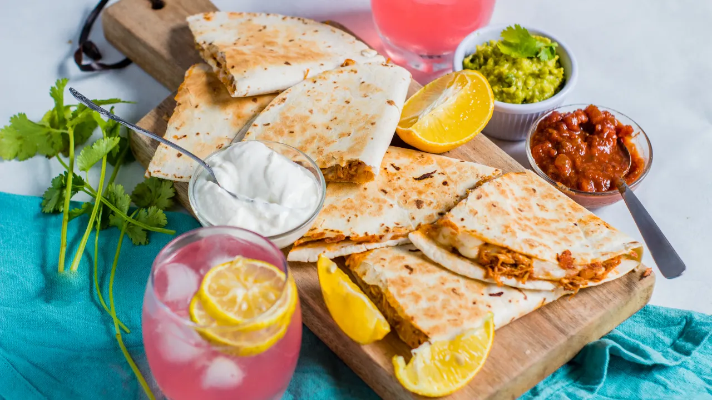
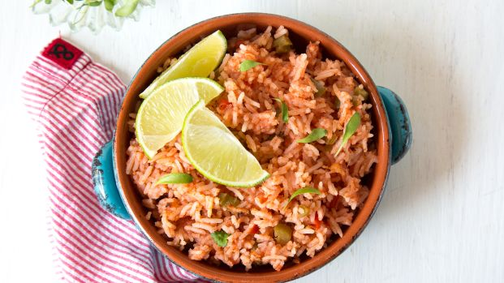

Margaritas
Frozen, on the rocks, with a twist — however you like 'em, we've got 'em.
Quesadillas
Quesadillas are perfect for a fun breakfast option, an on-the-go-snack or even a hearty dinner.
Mexican Rice
Bring the cows up and open the barn doors, 'cause this recipe is gonna zap you right into delicious, dreamy, "give-me-the-dang-spoon-now" kinda trance.